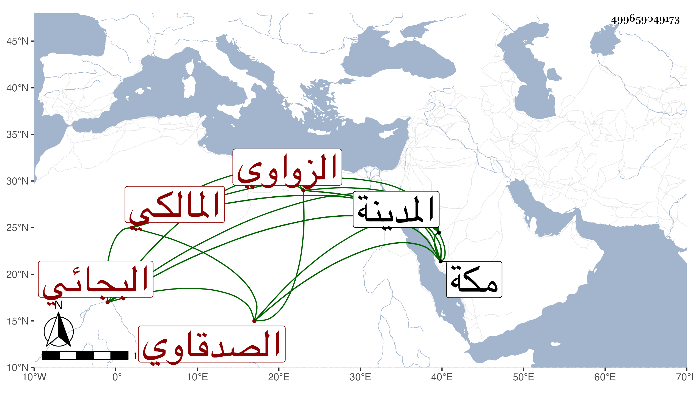

0902Sakhawi.DawLamic.ITO20230111-ara1.EIS1600.499659049173
Biography ID: 499659049173
إبراهيم بن محمد بن عبد الرحمن بن يحيى بن أحمد بن سليمان بن مهيب الصدقاوي الزواوي الأصل ثم البجائي المالكي نزيل مكة ووالد محمد الآتي ويعرف بالمصعصع ممن أخذ عن محمد بن أبي القسم المشدالي في آخرين كان ذا إلمام بالتفسير يستحضر من ابن عطية ويحضر دروس البرهاني بن ظهيرة وقطن المدينة أيضا سنين ثم انقطع بمكة نحو خمس عشرة سنة حتى مات بها في ضحى يوم الاثنين عاشر رمضان سنة اثنتين وثمانين وهو ابن ست وستين وأبوه ممن ولي القضاء بزواوة ومات تقريبا سنة ثلاث وخمسين أو التي قبلها عن ثلاث وستين سنة .
